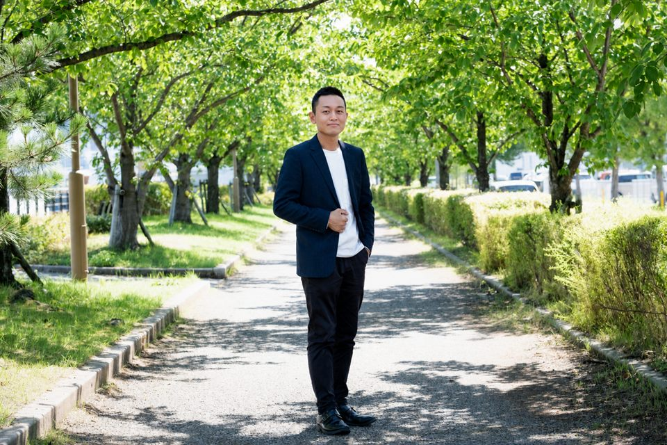

Representative
谷川 恵介Keisuke Tanikawa ／ NextRay 代表
新潟市を拠点に、ホームページ制作・MEO対策・AI自動化を手がけています。肩書きとしては「制作会社の人間」ですが、私が目指しているのは御社の外にいる広報・営業担当です。作って納品して終わりではなく、成果が出るまで一緒に走る立場でありたいと思っています。
主要なAIを実務で使いこなすため、Anthropic と OpenAI の公式教育プログラムを修了し、Google広告の正規パートナー認定も取得しました。技術は目的ではなく、あくまで新潟の課題を解くための道具だと考えています。
技術は一人では磨けず、地域の仕事は一社では回りません。学びの場と、地域の経済団体の両方に身を置いています。
AI・テクノロジー
ビジネスコミュニティ
地域の悩みを聞いていくと、突き詰めれば2つでした。だから事業も、その2つに対応する形にしています。
ISSUE 01
いい商品をつくっている。丁寧な仕事をしている。それなのに知られていない——新潟でいちばん多く聞く話です。多くの場合、実力の問題ではなく「見つけてもらう手段」を持っていないことが原因です。
今のお客様は、まずスマホで検索します。そこに出てこなければ、どれだけ良い会社でも候補にすら入りません。
ISSUE 02
募集をかけても応募が来ない。来ても続かない。結果、社長や現場の人が事務作業まで抱え込んで、本業に集中できなくなっています。採用だけで解決しようとすると、行き詰まる局面に来ていると感じます。
だとすれば、人を増やす以外の道も要ります。人がやらなくてよい仕事を仕組みに渡せば、限られた人材を本当に大切な業務に向けられます。
NextRayのサービスが4つあるのは、手を広げたかったからではありません。この2つの課題に、それぞれ2方向から手を打つためです。集客はホームページとMEOの両輪で、人手不足はAIによる事務・総務の自動化の両輪で解決します。
広報や集客の専任を置ける会社は、そう多くありません。だからといって何もしなければ、見つけてもらえない状態が続きます。その役割を、外から引き受けるのがNextRayです。
スマホ対応で集客できるホームページ、「地域名＋業種」で上位表示を狙うMEO対策、そして問い合わせ対応や事務作業を自動化する仕組みづくりまで。企業と地域の成長を、まるごと支援します。
できることと同じくらい、できないことも正直にお伝えします。
公開してからが本番です。月額の中で運用と改善を続け、数字を見ながら手を入れます。連絡が取れなくなる制作会社にはなりません。
取引案件を最大150に制限しています。一社あたりに使える時間を確保するためです。理由はこちらに書きました。
検索順位を保証することはしません。ご相談の結果、今は依頼いただかない方がよいと判断すれば、正直にお伝えします。